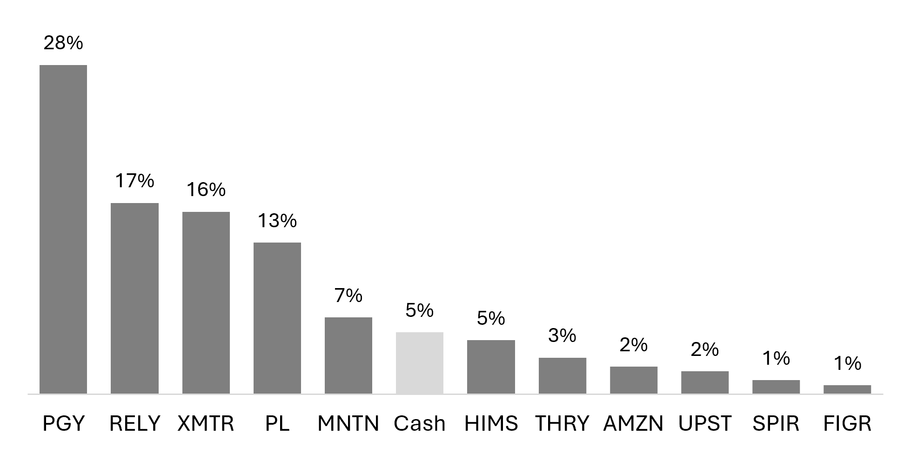

Mid Year 2026 Letter
Calendar year returns
| Period | Portfolio | SPY | QQQ |
|---|---|---|---|
| 2022 | -32.1% | -18.2% | -32.6% |
| 2023 | 24.6% | 26.2% | 54.9% |
| 2024 | 73.2% | 24.9% | 25.6% |
| 2025 | 98.9% | 17.7% | 20.8% |
| H1 2026 | 44.2% | 10.1% | 20.2% |
| Cumulative since inception | 320.3% | 67.1% | 90.2% |
| Annualized since inception | 37.6% | 12.1% | 15.4% |
Portfolio return is the time-weighted return for all investment accounts, calculated by Fidelity as of June 30, 2026. SPY and QQQ returns are from Yahoo Finance.
Current portfolio

The first half of 2026 was an eventful period, resulting in a portfolio that looks substantially different today than it did six months ago. In this letter, I’d like to walk through my thinking behind a few key decisions from this year.
The biggest decision was to trim my stake in Planet Labs. It has been my largest position for much of the last four years and the single largest driver of my returns thus far. I encourage you to read my article on the decision to sell as I won’t spend much time on it here.
In short, I felt the valuation was untenable, and Planet’s future returns would be increasingly divorced from the fundamental progression of the business. I did not want to sell out of the position entirely given my belief in great companies surprising to the upside, but it had reached a point where my portfolio-wide return expectations felt increasingly beholden to it. I was comfortable with this when the stock was at $2 or $3 but not at $30, $40, or even $50 (briefly).
I rolled much of the proceeds from Planet into Pagaya, my largest position today. Pagaya is in the business of connecting borrowers and investors; it does not interact with borrowers directly, however, instead partnering with banks and fintechs to underwrite their application flow. Partners agree to this because Pagaya shares fee income while enabling them to retain and win more customers without taking balance sheet risk. The value proposition to investors is more fluid and directly dependent on meeting their required return. Given the rapid growth of its funding base, I feel comfortable with how Pagaya is delivering on that investor promise.
I like the business model, but the thesis is built on a broader foundation: over the next decade, I believe the infrastructure for consumer lending (think fraud, underwriting, servicing, etc.) will be transformed by AI, and Pagaya stands to win from AI becoming the default. Its unique, multi-asset class data, collected from the application flow of over 30 partners (including those approved by the lender’s own models) is a distinct advantage, and while AI models may become more commoditized over time, differentiation in data will only continue to grow in importance. At its core, I think of Pagaya as a data network.
There are a few points to note on the business model. First, Pagaya uses pre-funded ABS, raising capital from investors prior to originating loans. This eliminates the liquidity risk faced by many similar companies. Second, reaching consumers through partners yields a more efficient growth model; the business grows by adding new partners and cross-selling existing partners rather than scaling marketing spend. The impact of these two factors can be seen from the company’s consistent expansion during the credit contraction in 2022 and 2023.
As with any volume-based revenue model, the business also benefits from built-in operating leverage. As network volume grows, so too does fee revenue without corresponding increases in a largely fixed cost base. The company has all the resourcing needed to support new partner onboarding requirements, and tech spend has remained roughly flat for the last three years.
I think the market’s central misunderstanding is conflating the recent slowdown in growth with a fundamental weakness in the business model. Slowing growth is a direct result of the decision to step back from single-family rentals; the headline numbers obscure network volume continuing to grow north of 20%. Further, the emphasis on growth today misses the biggest contributor to future growth: network expansion. Pagaya has shared an expectation of adding at least eight partners this year, well ahead of the long-term guide of 2-4 new partners annually. The ramp of these partners over the next few years provides visibility into durable growth.
Another factor that contributed to the timing of my investment is Pagaya’s expansion beyond simply being a second-look option. In 2025, new products (i.e., not second-look, or decline monetization as they call it) accounted for 44% of network volume and 50% of FRLPC (gross profit) in 2025. This is the beginning of Pagaya’s transformation into a broader technology platform serving lenders of all kinds. Multi-product partners already account for ~70% of network volume despite only representing ~30% of the partners. There is a lot of room to run.
Of course, the question of why now always returns to a measure of valuation. If we assume 2026 net income lands somewhere in the guided range of $110-160mn of net income, at a market cap just above $1bn, as it remained throughout much of the first half of the year, I paid ~8-12x earnings. For a business that I believe can compound at 15-20%+ over the long haul, I don’t think you can get a much better deal than that.
Early this year, I also took the opportunity to increase my investment in Remitly. Remitly is a cross-border remittance app. Similar to Pagaya, it is a volume-based business with natural operating leverage. That leverage has been on full display recently, with incremental operating margins north of 45% in the last two quarters while send volume continues to grow over 30%.
Remittances are a massive, fragmented market, and Remitly is a bet on execution. I believe it can continue to accumulate market share at the expense of banks (too expensive, poor customer experience), incumbents (channel conflict, not digital-native) and other fintechs (sub-scale).
My impression is the remittance category has fallen out of favor over fears of stablecoins. I think this fear is misplaced, and stablecoins are likely to enhance Remitly’s business model, not to mention it will be years before they represent a critical mass of any type of money movement.
Stablecoins are ultimately a rail, and until consumers are using stablecoins to pay for everyday goods and services (unlikely anytime soon), they pose more an opportunity than a threat. I expect Remitly can grow 15-20%+ for years to come while growing into a mature 20%+ margin.
Earlier this year, I also purchased a stake in MNTN. A 2025 IPO still struggling to find a steady shareholder base, the stock has drifted lower for much of the past year and today sits at $8 and change, down almost 70% from IPO. Adtech is a notoriously competitive space, producing precious few winners in the public markets. But I believe there is a real opportunity for MNTN, and you don’t have to believe much to earn a good return.
MNTN is a performance advertising platform for connected television (CTV) serving primarily small-to-medium businesses. The recent trajectory of the stock price directly contrasts the results of the business. Since 2021, revenue has more than tripled; gross margins have marched from the mid-60s to around 80%; and operating margin has flipped from -11% to nearly 14%. The company has been cash flow positive for at least the last three years and holds nearly a third of its market cap in net cash on the balance sheet.
What’s going on?
As far as I can tell, the story is quite simple. MNTN is bringing an underserved customer segment (SMBs) into a large, growing market still underpenetrated in its own right (CTV advertising). 95% of customers have never advertised on TV before; it’s building a market in its own right, not stealing share from incumbents. MNTN’s simplicity is its edge; it collapses all the tools needed to run a TV campaign into an intuitive platform tailor-made for small business marketers. In short, it’s lowering the barrier to entry.
The value proposition is evident from rapid customer uptake and consistently growing spend. Customers grew 63% in 2025 on the back of 56% growth in 2024, with inbound sales cycles shortening from 19 days to 11 days. Net expansion rate has remained above 115% for the last three quarters and was 108% in 2024. Customers are leaning into the platform over time, and new roll-outs such as QuickFrame AI (AI-powered video creation and production) should only strengthen its value to marketers.
Of course, the central question is around looming competition. Advertising giants from Amazon to AppLovin and everyone in between are making inroads into the CTV ecosystem and will eventually, if they aren’t already, target SMBs. However, it seems like the adverse effects of such competition are largely priced in. I expect the business to do around $100mn in EBITDA this year with negligible capex; call it a $650mn market cap less around $200mn of cash on hand, I’m comfortable paying less than 5x EBITDA for a business that has shown no signs of slowing growth and is tackling such a massive opportunity. Make no mistake, it is one to watch closely, but I’m excited how the next few years as a public company will shape the stock.
As always, I remain convicted in the opportunity for active investors to outperform the market over the long term. I’m a stock picker, and to the stock picker, the increased volatility we see in markets today is a good thing. It creates more dislocation and more reason for argument, which is the basis for every successful investment.
The last few years have been kind to me, but I am under no illusion the absolute level of outperformance will continue forever. Drawdowns happen. But as long as the market remains a market, in which differing opinions about the the value of a company cause people to transact together – there will always be an opportunity to outperform. It may not be getting any easier, but it certainly isn’t getting harder.
– Tim Gallagher